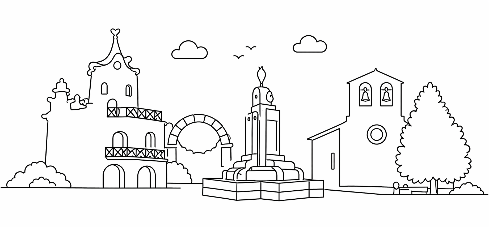

Castilla-La Mancha · España
2026

para el gran día. ¡La fiesta se acerca!
🎉 ¡Hoy es el gran día! ¡Viva Rillo de Gallo! 🎊
Rillo de Gallo es un pequeño pueblo del Señorío de Molina, en plena serranía de Guadalajara, de esos donde el tiempo parece detenerse entre piedras centenarias, campos dorados y cielos abiertos. Cada verano, sus vecinos, emigrantes y amigos de siempre se reúnen para celebrar las fiestas patronales: días de alegría, reencuentro y tradición que no tienen precio.
Las Fiestas de Rillo de Gallo son mucho más que un programa de actos: son la excusa perfecta para volver al pueblo, para que los niños corran libres por las calles, para que los mayores recuerden y los jóvenes descubran. Verbenas, concursos, juegos, misas mayores y la camaradería inconfundible de quien comparte raíces.
En esta web encontrarás toda la información sobre el programa de actos, las iniciativas de la comisión de fiestas y el merchandising oficial. ¡Apunta la fecha en el calendario y empieza a hacer la maleta!